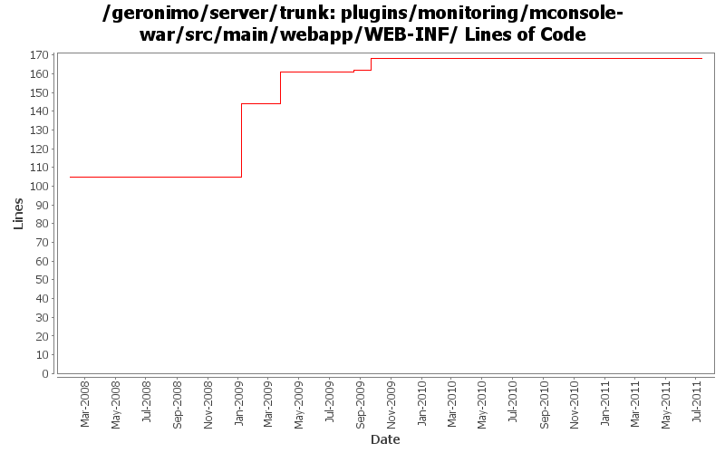

[root]/plugins/monitoring/mconsole-war/src/main/webapp/WEB-INF
 classes
(0 files, 0 lines)
classes
(0 files, 0 lines)
 META-INF
(1 files, 35 lines)
META-INF
(1 files, 35 lines)
 view
(14 files, 3822 lines)
view
(14 files, 3822 lines)

| Author | Changes | Lines of Code | Lines per Change |
|---|---|---|---|
| Totals | 13 (100.0%) | 67 (100.0%) | 5.1 |
| dwoods | 3 (23.1%) | 39 (58.2%) | 13.0 |
| jbohn | 1 (7.7%) | 17 (25.4%) | 17.0 |
| genspring | 2 (15.4%) | 7 (10.4%) | 3.5 |
| xuhaihong | 1 (7.7%) | 3 (4.5%) | 3.0 |
| gawor | 1 (7.7%) | 1 (1.5%) | 1.0 |
| kevan | 2 (15.4%) | 0 (0.0%) | 0.0 |
| djencks | 3 (23.1%) | 0 (0.0%) | 0.0 |
GERONIMO-5599 Reenable monitoring admin console portlets, Patch from Shenghao Fang.
1 lines of code changed in 1 file:
GERONIMO-6007 Upgrade woodstox version to 4.1.1
3 lines of code changed in 1 file:
GERONIMO-4823 role-based administration capabilities
6 lines of code changed in 1 file:
Initial Japanese translation. Patch from Kan Ogawa (GERONIMO-4678)
1 lines of code changed in 1 file:
GERONIMO-4597 Validate Web Admin Console input - fixes for CVE-2008-5518, CVE-2009-0038, and CVE-2009-0039
17 lines of code changed in 1 file:
GERONIMO-4484 Extraction, localization and display of messages generated in portlets. Applied common-message-monotor.patch from Gang Yin.
39 lines of code changed in 3 files:
GERONIMO-4415 use jpa for data access in monitoring console
0 lines of code changed in 2 files:
GERONIMO-4014 clean up monitoring plugin a little bit.
0 lines of code changed in 1 file:
upgrade trunk to 2.2-SNAPSHOT
0 lines of code changed in 2 files: